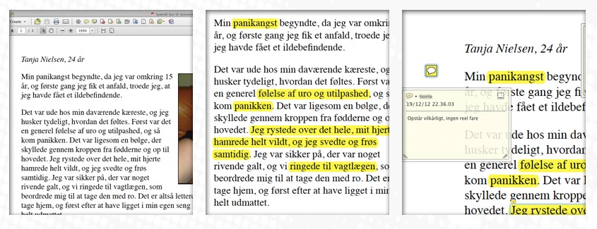

Sådan analyserer du en case i psykologi
- Skim teksten for at finde ud af, hvad den handler om
- Læs casen grundigt igennem og understreg de psykologiske problemstillinger
- Vælg et teoretisk perspektiv: kig på de teorier om emnet, som du har fået præsenteret, f.eks. angstformer, psykoanalytisk teori m.fl.
- Tag noter i margin i form af begreber fra den valgte teori
- Med baggrund i den valgte teori, skal du forklare de psykologiske problemer, som du har fundet i casen
- Inddrag andre relevante teorier og gentag punkt 4 (perspektivering)
Psykologiske problemstillinger = i denne sammenhæng betyder det emner og temaer, som psykologien kan være med til at belyse.
Teoretisk perspektiv = det handler at vælge en psykologisk teori, som kan anvendes på casen. Det vil sige at du skal se casen gennem teoriens "briller".
Begreber fra den valgte teori = centrale pointer og temaer i teorien.